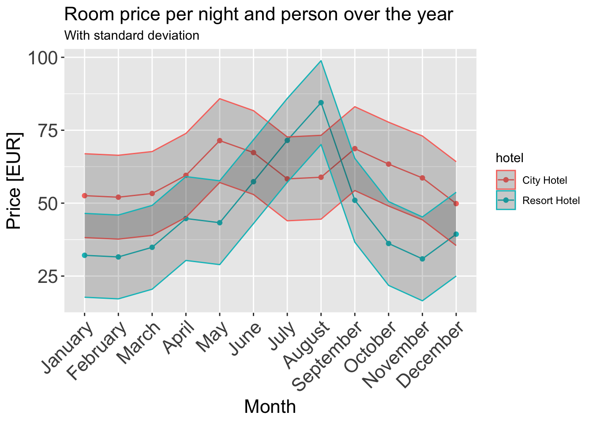
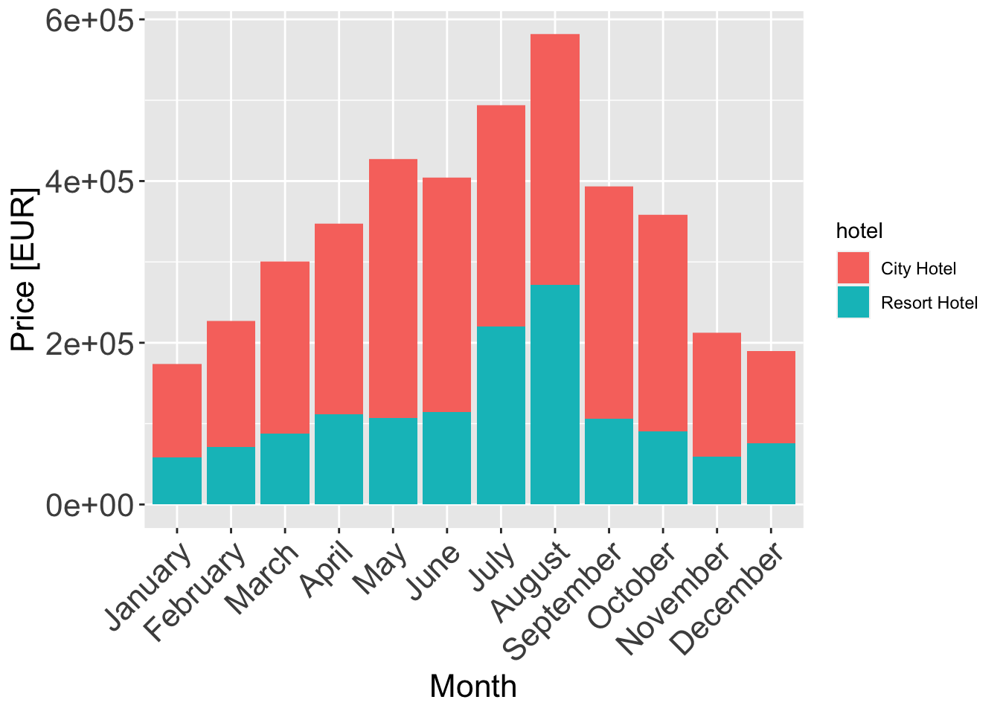

library(tidyverse)
library(ggplot2)
library(dplyr)
knitr::opts_chunk$set(echo = TRUE, warning=FALSE, message=FALSE)Challenge 6 Submission
challenge_6
hotel_bookings
Visualizing Time and Relationships
Challenge Overview
Today’s challenge is to:
- read in a data set, and describe the data set using both words and any supporting information (e.g., tables, etc)
- tidy data (as needed, including sanity checks)
- mutate variables as needed (including sanity checks)
- create at least one graph including time (evolution)
- try to make them “publication” ready (optional)
- Explain why you choose the specific graph type
- Create at least one graph depicting part-whole or flow relationships
- try to make them “publication” ready (optional)
- Explain why you choose the specific graph type
R Graph Gallery is a good starting point for thinking about what information is conveyed in standard graph types, and includes example R code.
(be sure to only include the category tags for the data you use!)
Read in data
Read in one (or more) of the following datasets, using the correct R package and command.
- debt ⭐
- fed_rate ⭐⭐
- abc_poll ⭐⭐⭐
- usa_hh ⭐⭐⭐
- hotel_bookings ⭐⭐⭐⭐
- air_bnb ⭐⭐⭐⭐⭐
data = read_csv("_data/hotel_bookings.csv")
# We inspect the columns in this dataset using the head command
head(data)Briefly describe the data
The dataset contains booking information for hotels, and includes information such as the time of booking, length of stay, the number of guests, cancellations, etc.
Tidy Data (as needed)
We look at the first few rows of the data to get a visual outline of the dataset and we observe that columns agent, company and country have a lot of NULL values. We can use the following to get a column-wise representation of all the garbage values.
data %>%
summarize_all(list(~ sum(is.na(.))))# we use the stringr package for this
library(stringr)
# get the null percentages
null_percentages <- sapply(data, function(x) sum(str_detect(x, "NULL"))/length(x))
# put it into a tibble and arrange it
null_percentages_tibble <- tibble(column = names(data), null_percentage = null_percentages)
null_percentages_tibble %>%
arrange(desc(null_percentage))Are there any variables that require mutation to be usable in your analysis stream? For example, do you need to calculate new values in order to graph them? Can string values be represented numerically? Do you need to turn any variables into factors and reorder for ease of graphics and visualization?
Document your work here.
Yes, I wish to plot the price of a room per night per person over the course of a year. I will first need to clean the data a little more, this would involve getting rid of garbage values, negative values, zeroes, etc.
replace_garbage <- c(country = "Unknown", agent = 0, company = 0)
# find indices that have `na`
na_indices <- which(is.na(data$children))
data$children[na_indices] <- 0.0
# Use a for loop to replace missing values in each column
for (col in names(replace_garbage)) {
data[data[,col] == "NULL", col] <- replace_garbage[col]
}
# club the undefined meals with SC based on information about the dataset
data$meal <- replace(data$meal, data$meal == "Undefined", "SC")
# separate data by Hotel Type:
resort_hotel <- data %>% filter(hotel == "Resort Hotel" & is_canceled == 0)
city_hotel <- data %>% filter(hotel == "City Hotel" & is_canceled == 0)
# calculate room price per person
data <- data %>% filter(adults != 0 | children != 0 | babies != 0)
data <- data %>% filter(adr>0)
data$adr_norm <- data$adr / (data$adults + data$children)
data_uncancelled <- data[data$is_canceled == 0, ] # the ones didn't cancel
room_prices <- data_uncancelled[, c("hotel", "reserved_room_type", "adr_norm")][order(data_uncancelled$reserved_room_type), ]Time Dependent Visualization
I am using a line plot with ribbons around them and grouping them by hotel (Hotel Type). A line plot conveys all the information about evolution of a quantity like adr (Average daily rate) over the course of a year. I convert the adr to a normalized version where we get one quantity that’s the mean price of that month per person across all the years. I also use ribbons to show the standard deviation of that price since mean is an aggressive aggregating function and loses a lot of information about the true trend if used in isolation.
# grab data:
room_prices_monthly <- data_uncancelled[c("hotel", "arrival_date_month", "adr_norm")][order(data_uncancelled$arrival_date_month),]
# order by month:
months <- c("January", "February", "March", "April", "May", "June",
"July", "August", "September", "October", "November", "December")
room_prices_monthly$arrival_date_month <- factor(room_prices_monthly$arrival_date_month, levels=months, ordered=TRUE)
room_prices_monthly_agg <- room_prices_monthly %>%
group_by(hotel, arrival_date_month) %>%
summarise(adr_norm = mean(adr_norm))
ggplot(data = room_prices_monthly_agg, aes(x = arrival_date_month, y = adr_norm, color = `hotel`, group = `hotel`)) +
geom_line() +
geom_point() +
geom_ribbon(aes(ymin = adr_norm - sd(adr_norm), ymax = adr_norm + sd(adr_norm)), alpha = 0.2) +
ggtitle("Room price per night and person over the year", subtitle = "With standard deviation") +
xlab("Month") +
ylab("Price [EUR]") +
theme(axis.text.x = element_text(angle = 45, hjust = 1),
plot.title = element_text(size = 16),
axis.text = element_text(size = 16),
axis.title = element_text(size = 16))
An interesting observation is that resorts tend to be expensive over the summers while hotels tend to be cheaper. This also makes sense intuitively.
Visualizing Part-Whole Relationships
A stacked bar-plot is an effective way to show the part-whole relationship of the two categories of hotels. We just stack them and color them grouped by hotel.
room_prices_monthly_agg <- room_prices_monthly %>%
group_by(hotel, arrival_date_month) %>%
summarise(adr_norm = mean(adr_norm))
ggplot(data = room_prices_monthly_agg, aes(x = arrival_date_month, y = adr_norm, fill = hotel)) +
geom_col() +
xlab("Month") +
ylab("Price [EUR]") +
theme(axis.text.x = element_text(angle = 45, hjust = 1),
plot.title = element_text(size = 16),
axis.text = element_text(size = 16),
axis.title = element_text(size = 16))